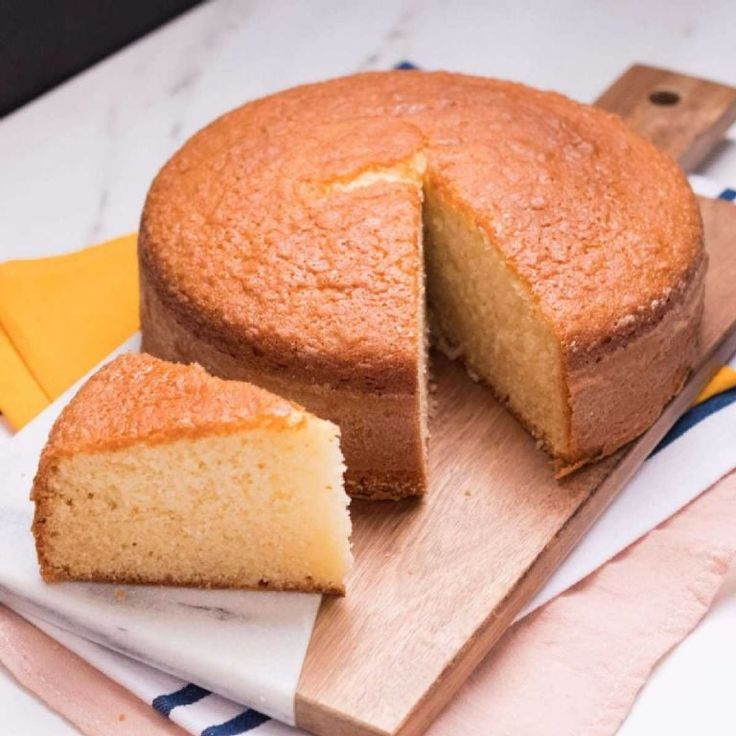

Bizcochuelo

Bizcochuelo económico, esponjoso y rápido de hacer.
Ingredientes
- 2 huevos.
- 1 taza de azúcar.
- Media taza de aceite.
- 1 taza de leche.
- Esencia de vainilla/limón/naranja (opcional).
- Harina leudante
Preparación
- Precalentar el horno a 180° mientras se prepara la mezcla.
- Mezclar en un bowl los 2 huevos con la taza de azúcar y el aceite.
- Una vez que los ingredientes estén bien integrados, agregar la leche. Mezclar.
- Para darle sabor, se le puede agregar una cucharadita de esencia de vainilla o la ralladura y el jugo de un limón o naranja.
- Agregar 2 tazas de harina leudante y mezclar.
- Poner la mezcla en un molde enharinado.
- Dejar en el horno por 40 minutos aprox.
- Dejar enfriar y luego desmoldar!